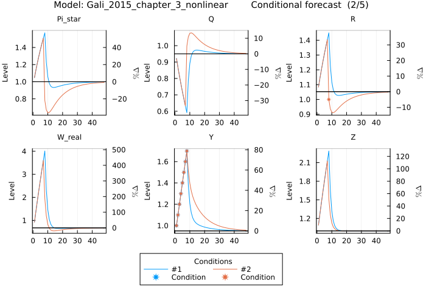
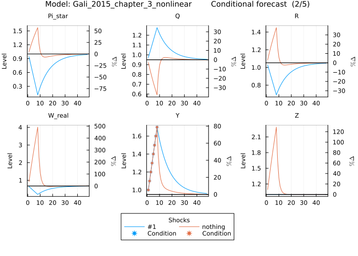
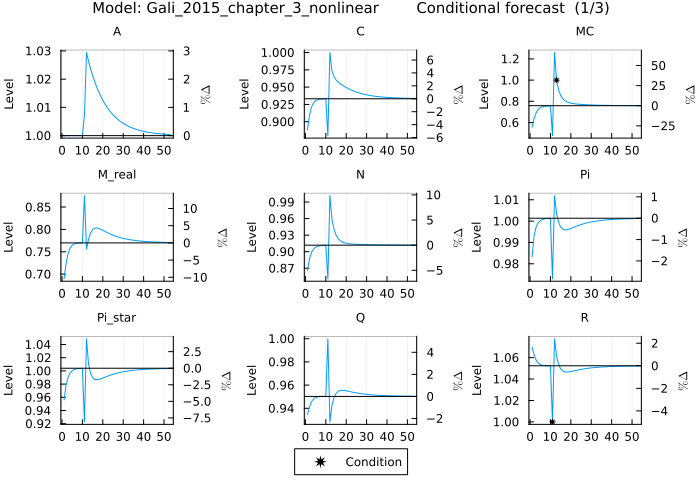
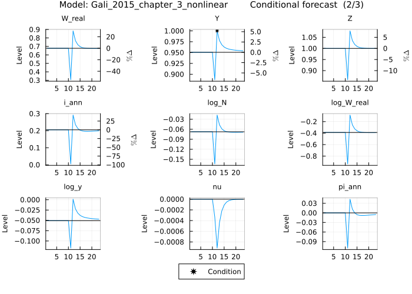

Conditional Forecasting
Conditional forecasting allows generating model projections conditional on future paths for endogenous variables or exogenous shocks. The conditions are fulfilled by contemporaneous shocks only and there is no effect today from conditions in the future. The plot_conditional_forecast function visualizes these conditional forecasts, showing how the model variables evolve.
First, define and load a model:
@model Gali_2015_chapter_3_nonlinear begin
W_real[0] = C[0] ^ σ * N[0] ^ φ
Q[0] = β * (C[1] / C[0]) ^ (-σ) * Z[1] / Z[0] / Pi[1]
R[0] = 1 / Q[0]
Y[0] = A[0] * (N[0] / S[0]) ^ (1 - α)
R[0] = Pi[1] * realinterest[0]
R[0] = 1 / β * Pi[0] ^ ϕᵖⁱ * (Y[0] / Y[ss]) ^ ϕʸ * exp(nu[0])
C[0] = Y[0]
log(A[0]) = ρ_a * log(A[-1]) + std_a * eps_a[x]
log(Z[0]) = ρ_z * log(Z[-1]) - std_z * eps_z[x]
nu[0] = ρ_ν * nu[-1] + std_nu * eps_nu[x]
MC[0] = W_real[0] / (S[0] * Y[0] * (1 - α) / N[0])
1 = θ * Pi[0] ^ (ϵ - 1) + (1 - θ) * Pi_star[0] ^ (1 - ϵ)
S[0] = (1 - θ) * Pi_star[0] ^ (( - ϵ) / (1 - α)) + θ * Pi[0] ^ (ϵ / (1 - α)) * S[-1]
Pi_star[0] ^ (1 + ϵ * α / (1 - α)) = ϵ * x_aux_1[0] / x_aux_2[0] * (1 - τ) / (ϵ - 1)
x_aux_1[0] = MC[0] * Y[0] * Z[0] * C[0] ^ (-σ) + β * θ * Pi[1] ^ (ϵ + α * ϵ / (1 - α)) * x_aux_1[1]
x_aux_2[0] = Y[0] * Z[0] * C[0] ^ (-σ) + β * θ * Pi[1] ^ (ϵ - 1) * x_aux_2[1]
log_y[0] = log(Y[0])
log_W_real[0] = log(W_real[0])
log_N[0] = log(N[0])
pi_ann[0] = 4 * log(Pi[0])
i_ann[0] = 4 * log(R[0])
r_real_ann[0] = 4 * log(realinterest[0])
M_real[0] = Y[0] / R[0] ^ η
end
@parameters Gali_2015_chapter_3_nonlinear begin
σ = 1
φ = 5
ϕᵖⁱ = 1.5
ϕʸ = 0.125
θ = 0.75
ρ_ν = 0.5
ρ_z = 0.5
ρ_a = 0.9
β = 0.99
η = 3.77
α = 0.25
ϵ = 9
τ = 0
std_a = .01
std_z = .05
std_nu = .0025
endCalling plot_conditional_forecast requires specifying conditions on endogenous variables. For example, conditioning on Y = 1.0 in the first period can be implemented as follows:
conditions = KeyedArray(Matrix{Union{Nothing,Float64}}(undef,1,1),
Variables = [:Y],
Periods = [1])
conditions[1,1] = 1.0Given the model and conditions the conditional forecast can be plotted as follows:
plot_conditional_forecast(Gali_2015_chapter_3_nonlinear,
conditions)
The function plots the paths of each endogenous variable conditional on fulfilling the specified conditions. If there was a condition provided for a variable it is represented by a marker (also indicated in the legend below the subplots). The title of the overall plot indicates the model name, and page number (if multiple pages are needed) and the title of each subplot indicates the variable name.
Combine or compare conditional forecasts with plot_conditional_forecast!
The plot_conditional_forecast! function (note the exclamation mark !) adds additional conditional forecasts to an existing plot created with plot_conditional_forecast, enabling direct comparison between different scenarios. Any input argument that affects the model's output (such as conditions, shocks, solution algorithm, parameter values, or initial states) can be varied to compare how these changes influence the conditional forecasts. See the respective subsections below (e.g., Conditions, Shocks, Solution Algorithm, Parameter Values) for details on specific arguments.
When using plot_conditional_forecast!, the new conditional forecast can be either overlaid for comparison (default) or stacked to show cumulative effects, depending on the plot_type argument (see Plot Type). Condition markers adopt the corresponding line color for easy identification.
Legend and table behavior:
- When inputs differ in one dimension (e.g., only the algorithm changes), the legend displays the value of that input dimension for each line (e.g.,
:first_order,:second_order). - When inputs differ in multiple dimensions (e.g., both conditions and parameters change), the legend shows sequential numbers (1, 2, 3, ...) with a running ID to reference different sets of conditions and inputs. A table below the plot details all input differences for each numbered scenario.
- Additional tables below show the relevant steady state values for each scenario to help identify differences across solution methods or parameter values.
Example with single input difference:
When only one input differs (e.g., parameter values), the legend shows the parameter values directly:
# Set up conditions
conditions_ka = KeyedArray(Matrix{Union{Nothing,Float64}}(undef,1,1),
Variables = [:Y],
Periods = 1:1)
conditions_ka[1,1] = 1.0
# Plot conditional forecast with baseline parameters
plot_conditional_forecast(Gali_2015_chapter_3_nonlinear,
conditions_ka,
parameters = :β => 0.99)
# Add conditional forecast with different discount factor
plot_conditional_forecast!(Gali_2015_chapter_3_nonlinear,
conditions_ka,
parameters = :β => 0.95)
The legend will display the β values (0.99 and 0.95) to identify each forecast.
The subplot y-axis labels change depending on the steady state values for each scenario. If the steady state values differ for a variable across scenarios, the y-axis label will indicate that the lines are in absolute deviations from the steady state. In that case no percent deviation is shown on the secondary y-axis, as the steady state values differ. In case the steady state values are the same across scenarios, the y-axis label indicates absolute levels on the primary y-axis and if the values are strictly positive the secondary y-axis shows the percent deviation scale.
Example with multiple input differences:
When multiple inputs differ (e.g., both algorithm and parameters), the legend shows sequential numbers and a table details the differences:
# Plot with baseline settings
plot_conditional_forecast(Gali_2015_chapter_3_nonlinear,
conditions_ka,
parameters = :β => 0.99)
# Add with different algorithm AND parameters
plot_conditional_forecast!(Gali_2015_chapter_3_nonlinear,
conditions_ka,
parameters = :β => 0.95,
algorithm = :second_order)
The legend will show 1 and 2, with a table below the plot listing the parameter and algorithm values for each scenario.
Conditions (Required)
The conditions argument [Type: Union{Matrix{Union{Nothing,Float64}}, SparseMatrixCSC{Float64}, KeyedArray{Union{Nothing,Float64}}, KeyedArray{Float64}}] defines conditions for which to find the corresponding shocks. The input can have multiple formats, but for all types of entries the first dimension corresponds to variables and the second dimension to the number of periods. The conditions can be specified using a matrix of type Matrix{Union{Nothing,Float64}}. In this case the conditions are matrix elements of type Float64 and all remaining (free) entries are nothing.
The number of endogenous variables can be retrieved as follows:
get_variables(Gali_2015_chapter_3_nonlinear)
# 23-element Vector{String}:
# "A"
# "C"
# "MC"
# "M_real"
# "N"
# "Pi"
# "Pi_star"
# "Q"
# "R"
# "S"
# "W_real"
# "Y"
# "Z"
# "i_ann"
# "log_N"
# "log_W_real"
# "log_y"
# "nu"
# "pi_ann"
# "r_real_ann"
# "realinterest"
# "x_aux_1"
# "x_aux_2"Conditioning Y for 8 periods on a given path means setting the elements in the 12th row:
conditions = Matrix{Union{Nothing,Float64}}(undef,23,8)
conditions[12,1] = 1.0
conditions[12,2] = 1.1
conditions[12,3] = 1.2
conditions[12,4] = 1.3
conditions[12,5] = 1.4
conditions[12,6] = 1.5
conditions[12,7] = 1.6
conditions[12,8] = 1.7
plot_conditional_forecast(Gali_2015_chapter_3_nonlinear,
conditions)
The plot shows the conditional paths and the specified conditions. The last page displays the shocks used to enforce these paths. Because there is a single condition per period and three available shocks, the combination of the three shocks with the smallest magnitudes is selected.

A SparseMatrixCSC{Float64} can also be used as input. In this case only non-zero elements are taken as conditions. Note that conditioning variables to be zero using a SparseMatrixCSC{Float64} as input is not possible (use other input formats to do so). The conditions in this example also include restrictions for the variable R = 1.0 (second element) in period 9:
conditions_sp = spzeros(23,8)
conditions_sp[12,1] = 1.0
conditions_sp[12,2] = 1.1
conditions_sp[12,3] = 1.2
conditions_sp[12,4] = 1.3
conditions_sp[12,5] = 1.4
conditions_sp[12,6] = 1.5
conditions_sp[12,7] = 1.6
conditions_sp[12,8] = 1.7
conditions_sp[9,8] = 1.0
plot_conditional_forecast(Gali_2015_chapter_3_nonlinear,
conditions_sp)
The paths on both variables are enforced and in the 8th period the paths of the endogenous variables and shocks differ to the previous example.
This becomes even clearer by overlaying the two conditional forecasts with their different conditions:
plot_conditional_forecast(Gali_2015_chapter_3_nonlinear,
conditions)
plot_conditional_forecast!(Gali_2015_chapter_3_nonlinear,
conditions_sp)
The differences between the two become now clearly visible. Note that there are only 6 subplots per plot and at the bottom the legend now features the two set of conditions using a running ID to reference them, and the marker for the conditions also takes on the color of the line.
Another possibility to input conditions is by using a KeyedArray. The KeyedArray type is provided by the AxisKeys package. A KeyedArray{Union{Nothing,Float64}} can be used where, similar to Matrix{Union{Nothing,Float64}}, all entries of type Float64 are recognised as conditions and all other entries have to be nothing. Furthermore, in the primary axis a subset of variables (of type Symbol or String) for which conditions are specified can be included and all other variables are considered free. The same goes for the case when using KeyedArray{Float64}} as input, whereas in this case the conditions for the specified variables bind for all periods specified in the KeyedArray, because there are no nothing entries permitted with this type.
The benefit of using a KeyedArray is that there is no need to look up the variables. Conditioning on multiple variables in multiple periods works as follows:
conditions_ka = KeyedArray(Matrix{Union{Nothing,Float64}}(undef,3,3),
Variables = [:R, :Y, :MC],
Periods = 1:3)
conditions_ka[1,1] = 1.0
conditions_ka[2,2] = 1.0
conditions_ka[3,3] = 1.0plot_conditional_forecast(Gali_2015_chapter_3_nonlinear,
conditions_ka)
Shocks
The shocks argument [Default: nothing, Type: Union{Matrix{Union{Nothing,Float64}}, SparseMatrixCSC{Float64}, KeyedArray{Union{Nothing,Float64}}, KeyedArray{Float64}, Nothing}] allows the user to condition on the shocks in addition to the endogenous variables. This argument allows the user to include certain (known) shock values. By entering restrictions on the shocks in this way, the problem to match the conditions on endogenous variables is restricted to the remaining free (unknown) shocks in the respective period.
The input can have multiple formats, but for all types of entries, the first dimension corresponds to shocks and the second dimension to the number of periods. shocks can be specified using a matrix of type Matrix{Union{Nothing,Float64}}. In this case the shocks are matrix elements of type Float64 and all remaining (free) entries are nothing.
Given conditions on Y for the first 8 periods, the shocks can be restricted to fulfill these conditions by setting all but one shock to zero. The number of shocks can be retrieved as follows:
get_shocks(Gali_2015_chapter_3_nonlinear)
# 3-element Vector{String}:
# "eps_a"
# "eps_nu"
# "eps_z"Setting the shock values for the last two shocks to 0 can be done like this:
shocks = Matrix{Union{Nothing,Float64}}(undef,3,8)
shocks[2,:] .= 0
shocks[3,:] .= 0Together with the conditions the conditional forecast can then be plotted:
conditions = Matrix{Union{Nothing,Float64}}(undef,23,8)
conditions[12,1] = 1.0
conditions[12,2] = 1.1
conditions[12,3] = 1.2
conditions[12,4] = 1.3
conditions[12,5] = 1.4
conditions[12,6] = 1.5
conditions[12,7] = 1.6
conditions[12,8] = 1.7
plot_conditional_forecast(Gali_2015_chapter_3_nonlinear,
conditions,
shocks = shocks)

Note the very large shock magnitudes of the first shock and the condition markers on the shocks indicating that the other two shocks were conditioned to be zero. Contrasting this with the version without the conditions of the shocks also highlights the difference in outcomes depending on which shocks can be used to enforce the conditions on the endogenous variables.
plot_conditional_forecast(Gali_2015_chapter_3_nonlinear,
conditions,
shocks = shocks)
plot_conditional_forecast!(Gali_2015_chapter_3_nonlinear,
conditions)
The paths clearly differ and are even directionally different due to the restriction on only the first shocks being able to fulfill the conditions on the endogenous variables.
A SparseMatrixCSC{Float64} can also be used as input. In this case only non-zero elements are taken as certain shock values. Note that conditioning shocks to be zero using a SparseMatrixCSC{Float64} as input is not possible (use other input formats to do so).
Using the previous example for the conditions on multiple variables across multiple periods, the same can be done for the shocks:
shocks_sp = spzeros(3,3)
shocks_sp[1,1] = 0.1
shocks_sp[2,2] = 0.1
shocks_sp[3,3] = 0.1Given this non-zero path for the shocks, two of the three shocks remain to fulfill the conditions. There was one condition per period so that the least square solution will be selected:
conditions_ka = KeyedArray(Matrix{Union{Nothing,Float64}}(undef,3,3),
Variables = [:R, :Y, :MC],
Periods = 1:3)
conditions_ka[1,1] = 1.0
conditions_ka[2,2] = 1.0
conditions_ka[3,3] = 1.0
plot_conditional_forecast(Gali_2015_chapter_3_nonlinear,
conditions_ka,
shocks = shocks_sp)
This mixture of known and unknown shocks, and known conditions on endogenous variables allows for substantial flexibility.
Another possibility to input known shocks is by using a KeyedArray. The KeyedArray type is provided by the AxisKeys package. A KeyedArray{Union{Nothing,Float64}} can be used where, similar to Matrix{Union{Nothing,Float64}}, all entries of type Float64 are recognised as known shocks and all other entries have to be nothing. Furthermore, in the primary axis a subset of shocks (of type Symbol or String) for which values are specified can be included and all other shocks are considered free. The same goes for the case when using KeyedArray{Float64}} as input, whereas in this case the values for the specified shocks bind for all periods specified in the KeyedArray, because there are no nothing entries permitted with this type.
Working with the same conditions the shocks can be restricted to zero using this input type. Doing so for one shock per period works as follows:
shocks_ka = KeyedArray(Matrix{Float64}(undef,1,3),
Variables = [:eps_a],
Periods = 1:3)
shocks_ka .= 0.0Combined with conditions on the endogenous variables the conditional forecast can be plotted:
conditions_ka = KeyedArray(Matrix{Union{Nothing,Float64}}(undef,3,3),
Variables = [:R, :Y, :MC],
Periods = 1:3)
conditions_ka[1,1] = 1.0
conditions_ka[2,2] = 1.0
conditions_ka[3,3] = 1.0
plot_conditional_forecast(Gali_2015_chapter_3_nonlinear,
conditions_ka,
shocks = shocks_ka)
To see the influence of the shocks (which is similar to conditional forecasts) compare the last two examples. One scenario has non zero shocks and the other zero shocks they condition on:
plot_conditional_forecast(Gali_2015_chapter_3_nonlinear,
conditions_ka,
shocks = shocks_ka)
plot_conditional_forecast!(Gali_2015_chapter_3_nonlinear,
conditions_ka,
shocks = shocks_sp)
Solution Algorithm
Conditional forecasts can be plotted using different solution algorithms. The following example uses a second-order perturbation solution:
conditions_ka = KeyedArray(Matrix{Union{Nothing,Float64}}(undef,3,3),
Variables = [:R, :Y, :MC],
Periods = 1:3)
conditions_ka[1,1] = 1.0
conditions_ka[2,2] = 1.0
conditions_ka[3,3] = 1.0
plot_conditional_forecast(Gali_2015_chapter_3_nonlinear,
conditions_ka,
algorithm = :second_order)
The most notable difference is that at second order, dynamics are observed for S, which remains constant at first order (under certainty equivalence). Additionally, the steady state levels change because the stochastic steady state incorporates precautionary behavior (see horizontal lines). This has consequences for the conditions as they are in levels.
To compare the two solution methods side by side, use plot_conditional_forecast! to add to an existing plot:
plot_conditional_forecast(Gali_2015_chapter_3_nonlinear,
conditions_ka)
plot_conditional_forecast!(Gali_2015_chapter_3_nonlinear,
conditions_ka,
algorithm = :second_order)
The plots now show both solution methods overlaid. The first-order solution is shown in blue, the second-order solution in orange, as indicated in the legend below the plot. Note that the steady state levels can be different for the two solution methods. For variables where the relevant steady state is the same for both methods (e.g., S), the level appears on the left axis and percentage deviations on the right axis. For variables where the steady state differs between methods (e.g., R), only absolute level deviations (abs. Δ) appear on the left axis. The relevant steady state levels are shown in a table below the plot for reference (rounded to help identify differences). The relevant steady state also implies that the conditions vary in terms of distance to steady state and thereby in the shocks they require for them to be fulfilled. For the variable Y the conditions given a first order solution imply a lower absolute deviation from the relevant steady state than for the second order solution.
Additional solution methods can be added to the same plot:
plot_conditional_forecast!(Gali_2015_chapter_3_nonlinear,
conditions_ka,
algorithm = :pruned_third_order)
Note that the pruned third-order solution incorporates time-varying risk and the dynamics differ relative to lower order solutions. The additional solution appears as another colored line with corresponding entries in both the legend and the steady state table below.
Initial State
The initial_state argument (default: [0.0], type: Union{Vector{Vector{Float64}},Vector{Float64}}) defines the starting point for the model. For pruned solution algorithms, the initial state can be provided as multiple state vectors (Vector{Vector{Float64}}). In this case, the initial state must be specified in deviations from the non-stochastic steady state. For all other cases, specify the initial state in levels. For pruned solution algorithms with a Vector{Float64} initial state, only the first-order initial state vector is affected. The initial state defines the starting point for the conditional forecast and must contain all model variables, including any leads or lags. To obtain the correct ordering and number of variables, call get_irf(𝓂, shocks = :none, variables = :all, periods = 1), which returns a KeyedArray with all variables in the correct order. The KeyedArray type is provided by the AxisKeys package. For example:
init_state = get_irf(Gali_2015_chapter_3_nonlinear,
shocks = :none,
variables = :all,
periods = 1,
levels = true)Only state variables will have an impact on the conditional forecast. To check which variables are state variables:
get_state_variables(Gali_2015_chapter_3_nonlinear)
# 4-element Vector{String}:
# "A"
# "S"
# "Z"
# "nu"Now modify the initial state and set nu to 0.1:
init_state(:nu,:,:) .= 0.1The modified initial state can now be input into the plot_conditional_forecast function as a Vector. Furthermore, in the following example the conditions are shifted 10 periods into the future:
conditions_ka = KeyedArray(Matrix{Union{Nothing,Float64}}(undef,3,13),
Variables = [:R, :Y, :MC],
Periods = 1:13)
conditions_ka[1,11] = 1.0
conditions_ka[2,12] = 1.0
conditions_ka[3,13] = 1.0
plot_conditional_forecast(Gali_2015_chapter_3_nonlinear,
conditions_ka,
initial_state = vec(init_state))
Note how the initial state drives the dynamics until the conditions come in after period 10.
For pruned solution methods the initial state can also be given as multiple state vectors (Vector{Vector{Float64}}). When providing a vector of vectors, values must be specified as differences from the non-stochastic steady state. When providing only one vector, values must be in levels, with the initial state having its full nonlinear effect in the first period. Using a vector of vectors allows setting the pruned higher-order auxiliary state vectors. While this can be useful in some cases, note that these higher-order auxiliary state vectors have only a linear impact in the first period. Start by assembling the vector of vectors:
init_state_pruned_3rd_in_diff = get_irf(Gali_2015_chapter_3_nonlinear,
shocks = :none,
variables = :all,
periods = 1,
levels = true) - get_irf(Gali_2015_chapter_3_nonlinear,
shocks = :none,
variables = :all,
periods = 1,
algorithm = :pruned_third_order,
levels = true)
# 3-dimensional KeyedArray(NamedDimsArray(...)) with keys:
# ↓ Variables ∈ 23-element Vector{Symbol}
# → Periods ∈ 1-element UnitRange{Int64}
# ◪ Shocks ∈ 1-element Vector{Symbol}
# And data, 23×1×1 Array{Float64, 3}:
# [:, :, 1] ~ (:, :, :none):
# (1)
# (:A) 0.0
# (:C) 0.01899564383140051
# (:MC) 0.26061783703451824
# (:M_real) 0.014844948179111417
# (:N) 0.0256329467464953
# (:Pi) -0.0013592503942323475
# (:Pi_star) -0.0040777511826968205
# (:Q) -0.00023912532361458627
# (:R) 0.0002649588073291298
# (:S) 3.3306690738754696e-16
# (:W_real) 0.18508712654020898
# (:Y) 0.01899564383140051
# (:Z) 0.0
# (:i_ann) 0.0010068434678508487
# (:log_N) 0.024432922221986165
# (:log_W_real) 0.1404893027764202
# (:log_y) 0.018324691666489368
# (:nu) -1.3404049553225972e-17
# (:pi_ann) -0.005437001576929203
# (:r_real_ann) 0.008306969164175088
# (:realinterest) 0.002186044516888197
# (:x_aux_1) -0.7618262640813329
# (:x_aux_2) -0.371793344047362First- and third-order dynamics don't affect the steady state through risk, so they are zero. The second-order steady state includes the risk adjustment. Assemble the vectors for the third order case:
init_states_pruned_3rd_vec = [
zero(vec(init_state_pruned_3rd_in_diff)),
vec(init_state_pruned_3rd_in_diff),
zero(vec(init_state_pruned_3rd_in_diff)),
]Then set nu to 0.1 in the first order terms. Inspecting init_state_pruned_3rd_in_diff shows that nu is the 18th variable in the vector:
init_states_pruned_3rd_vec[1][18] = 0.1
plot_conditional_forecast(Gali_2015_chapter_3_nonlinear,
conditions_ka,
initial_state = init_states_pruned_3rd_vec,
algorithm = :pruned_third_order)
Alternatively, a simple vector can be used for the initial state. In this case the values must be in levels and the impact of the initial state is assumed to have the full nonlinear effect in the first period:
init_state_pruned_3rd = get_irf(Gali_2015_chapter_3_nonlinear,
shocks = :none,
variables = :all,
periods = 1,
levels = true,
algorithm = :pruned_third_order)
init_state_pruned_3rd(:nu, :, :) .= 0.1
plot_conditional_forecast(Gali_2015_chapter_3_nonlinear,
conditions_ka,
initial_state = vec(init_state_pruned_3rd),
algorithm = :pruned_third_order)Compare this with the first-order versions, each starting from their respective steady states.
plot_conditional_forecast!(Gali_2015_chapter_3_nonlinear,
conditions_ka,
initial_state = vec(init_state))
This shows that the pruned third-order solution changes the dynamics due to the nonlinear solution and it's effect on the absolute difference between the steady state and the conditions on endogenous variables.
Simulation Periods
The periods argument (default: 40, type: Int) specifies the number of periods after the end of the conditions for which to calculate the output. When a matrix of shocks is provided, the last period for which a shock or shock condition is provided is considered. To set the number of periods to 10:
conditions_ka = KeyedArray(Matrix{Union{Nothing,Float64}}(undef,3,13),
Variables = [:R, :Y, :MC],
Periods = 1:13)
conditions_ka[1,11] = 1.0
conditions_ka[2,12] = 1.0
conditions_ka[3,13] = 1.0
plot_conditional_forecast(Gali_2015_chapter_3_nonlinear,
conditions_ka,
periods = 10)
The x-axis automatically adjusts to show only 23 periods as this corresponds to the last period with a condition plus the 10 periods defined in the argument.
The following example uses a shock matrix with the last input in period 20, sets the periods argument to 30, and compares it to the previous 10-period plot:
shocks_ka = KeyedArray(Matrix{Float64}(undef,1,20),
Variables = [:eps_a],
Periods = 1:20)
shocks_ka .= 0.0
plot_conditional_forecast!(Gali_2015_chapter_3_nonlinear,
conditions_ka,
shocks = shocks_ka,
periods = 30)
The x-axis adjusts to 50 periods, with the first plot ending after 23 periods and the second plot ending after 50 periods. The legend indicates which color corresponds to which combination of shocks and periods.
Variables to Plot
The variables argument (default: :all_excluding_obc) specifies for which variables to show results. Variable names can be specified as either a Symbol or String (e.g. :y or "y"), or Tuple, Matrix or Vector of String or Symbol. Any variables not part of the model will trigger a warning. :all_excluding_auxiliary_and_obc includes all variables except auxiliary variables and those related to occasionally binding constraints (OBC). :all_excluding_obc includes all variables except those related to occasionally binding constraints. :all includes all variables.
Specific variables can be selected to plot. The following example selects only output (Y) and inflation (Pi) using a Vector of Symbols:
conditions_ka = KeyedArray(Matrix{Union{Nothing,Float64}}(undef,3,3),
Variables = [:R, :Y, :MC],
Periods = 1:3)
conditions_ka[1,1] = 1.0
conditions_ka[2,2] = 1.0
conditions_ka[3,3] = 1.0
plot_conditional_forecast(Gali_2015_chapter_3_nonlinear,
conditions_ka,
variables = [:Y, :Pi])
The plot now displays the two selected variables (sorted alphabetically) and the plots enforcing the conditions on endogenous variables. The other two variables for which conditions were provided are not shown.
The same can be done using a Tuple:
plot_conditional_forecast(Gali_2015_chapter_3_nonlinear,
conditions_ka,
variables = (:Y, :Pi))a Matrix:
plot_conditional_forecast(Gali_2015_chapter_3_nonlinear,
conditions_ka,
variables = [:Y :Pi])or providing the variable names as Strings:
plot_conditional_forecast(Gali_2015_chapter_3_nonlinear,
conditions_ka,
variables = ["Y", "Pi"])or a single variable as a Symbol:
plot_conditional_forecast(Gali_2015_chapter_3_nonlinear,
conditions_ka,
variables = :Y)or as a String:
plot_conditional_forecast(Gali_2015_chapter_3_nonlinear,
conditions_ka,
variables = "Y")Then there are some predefined options:
:all_excluding_auxiliary_and_obc (default) plots all variables except auxiliary variables and those used to enforce occasionally binding constraints (OBC).
plot_conditional_forecast(Gali_2015_chapter_3_nonlinear,
conditions_ka,
variables = :all_excluding_auxiliary_and_obc):all_excluding_obc plots all variables except those used to enforce occasionally binding constraints (OBC).
plot_conditional_forecast(Gali_2015_chapter_3_nonlinear,
conditions_ka,
variables = :all_excluding_obc)To see auxiliary variables, use a model that defines them. The FS2000 model can be used:
@model FS2000 begin
dA[0] = exp(gam + z_e_a * e_a[x])
log(m[0]) = (1 - rho) * log(mst) + rho * log(m[-1]) + z_e_m * e_m[x]
- P[0] / (c[1] * P[1] * m[0]) + bet * P[1] * (alp * exp( - alp * (gam + log(e[1]))) * k[0] ^ (alp - 1) * n[1] ^ (1 - alp) + (1 - del) * exp( - (gam + log(e[1])))) / (c[2] * P[2] * m[1])=0
W[0] = l[0] / n[0]
- (psi / (1 - psi)) * (c[0] * P[0] / (1 - n[0])) + l[0] / n[0] = 0
R[0] = P[0] * (1 - alp) * exp( - alp * (gam + z_e_a * e_a[x])) * k[-1] ^ alp * n[0] ^ ( - alp) / W[0]
1 / (c[0] * P[0]) - bet * P[0] * (1 - alp) * exp( - alp * (gam + z_e_a * e_a[x])) * k[-1] ^ alp * n[0] ^ (1 - alp) / (m[0] * l[0] * c[1] * P[1]) = 0
c[0] + k[0] = exp( - alp * (gam + z_e_a * e_a[x])) * k[-1] ^ alp * n[0] ^ (1 - alp) + (1 - del) * exp( - (gam + z_e_a * e_a[x])) * k[-1]
P[0] * c[0] = m[0]
m[0] - 1 + d[0] = l[0]
e[0] = exp(z_e_a * e_a[x])
y[0] = k[-1] ^ alp * n[0] ^ (1 - alp) * exp( - alp * (gam + z_e_a * e_a[x]))
gy_obs[0] = dA[0] * y[0] / y[-1]
gp_obs[0] = (P[0] / P[-1]) * m[-1] / dA[0]
log_gy_obs[0] = log(gy_obs[0])
log_gp_obs[0] = log(gp_obs[0])
end
@parameters FS2000 begin
alp = 0.356
bet = 0.993
gam = 0.0085
mst = 1.0002
rho = 0.129
psi = 0.65
del = 0.01
z_e_a = 0.035449
z_e_m = 0.008862
endSince both c and P appear in t+2, they generate auxiliary variables in the model. Plotting the conditional forecast for all variables excluding OBC-related ones means auxiliary variables are shown:
conditions_ka = KeyedArray(Matrix{Union{Nothing,Float64}}(undef,3,3),
Variables = [:P, :R, :c],
Periods = 1:3)
conditions_ka[1,1] = 1.0
conditions_ka[2,2] = 1.0
conditions_ka[3,3] = 1.0
plot_conditional_forecast(FS2000,
conditions_ka,
variables = :all_excluding_obc)
Both c and P appear twice: once as the variable itself and once as an auxiliary variable with the ᴸ⁽¹⁾ superscript, representing the value of the variable in t+1 as expected in t.
:all plots all variables including auxiliary variables and those used to enforce occasionally binding constraints (OBC).
Use the Gali_2015_chapter_3 model with an effective lower bound (note the use of the max function in the Taylor rule):
@model Gali_2015_chapter_3_obc begin
W_real[0] = C[0] ^ σ * N[0] ^ φ
Q[0] = β * (C[1] / C[0]) ^ (-σ) * Z[1] / Z[0] / Pi[1]
R[0] = 1 / Q[0]
Y[0] = A[0] * (N[0] / S[0]) ^ (1 - α)
R[0] = Pi[1] * realinterest[0]
R[0] = max(R̄ , 1 / β * Pi[0] ^ ϕᵖⁱ * (Y[0] / Y[ss]) ^ ϕʸ * exp(nu[0]))
C[0] = Y[0]
log(A[0]) = ρ_a * log(A[-1]) + std_a * eps_a[x]
log(Z[0]) = ρ_z * log(Z[-1]) - std_z * eps_z[x]
nu[0] = ρ_ν * nu[-1] + std_nu * eps_nu[x]
MC[0] = W_real[0] / (S[0] * Y[0] * (1 - α) / N[0])
1 = θ * Pi[0] ^ (ϵ - 1) + (1 - θ) * Pi_star[0] ^ (1 - ϵ)
S[0] = (1 - θ) * Pi_star[0] ^ (( - ϵ) / (1 - α)) + θ * Pi[0] ^ (ϵ / (1 - α)) * S[-1]
Pi_star[0] ^ (1 + ϵ * α / (1 - α)) = ϵ * x_aux_1[0] / x_aux_2[0] * (1 - τ) / (ϵ - 1)
x_aux_1[0] = MC[0] * Y[0] * Z[0] * C[0] ^ (-σ) + β * θ * Pi[1] ^ (ϵ + α * ϵ / (1 - α)) * x_aux_1[1]
x_aux_2[0] = Y[0] * Z[0] * C[0] ^ (-σ) + β * θ * Pi[1] ^ (ϵ - 1) * x_aux_2[1]
log_y[0] = log(Y[0])
log_W_real[0] = log(W_real[0])
log_N[0] = log(N[0])
pi_ann[0] = 4 * log(Pi[0])
i_ann[0] = 4 * log(R[0])
r_real_ann[0] = 4 * log(realinterest[0])
M_real[0] = Y[0] / R[0] ^ η
end
@parameters Gali_2015_chapter_3_obc begin
R̄ = 1.0
σ = 1
φ = 5
ϕᵖⁱ = 1.5
ϕʸ = 0.125
θ = 0.75
ρ_ν = 0.5
ρ_z = 0.5
ρ_a = 0.9
β = 0.99
η = 3.77
α = 0.25
ϵ = 9
τ = 0
std_a = .01
std_z = .05
std_nu = .0025
R > 1.0001
endPlotting the conditional forecast for all variables including OBC-related ones reveals the OBC-related auxiliary variables:
conditions_ka = KeyedArray(Matrix{Union{Nothing,Float64}}(undef,3,3),
Variables = [:C, :R, :Y],
Periods = 1:3)
conditions_ka[1,1] = 1.0
conditions_ka[2,2] = 1.0
conditions_ka[3,3] = 1.0
plot_conditional_forecast(Gali_2015_chapter_3_obc,
conditions_ka,
variables = :all)
The OBC-related variables appear in the last subplot, but note that OBCs are ignored with conditional forecasting.
Parameter Values
When no parameters are provided, the solution uses the previously defined parameter values. Parameters can be provided as a Vector of values, or as a Vector or Tuple of Pairs mapping parameter Symbols or Strings to values. The solution is recalculated when new parameter values differ from the previous ones.
Start by changing the discount factor β from 0.99 to 0.95:
conditions_ka = KeyedArray(Matrix{Union{Nothing,Float64}}(undef,3,3),
Variables = [:R, :Y, :MC],
Periods = 1:3)
conditions_ka[1,1] = 1.0
conditions_ka[2,2] = 1.0
conditions_ka[3,3] = 1.0
plot_conditional_forecast(Gali_2015_chapter_3_nonlinear,
conditions_ka,
parameters = :β => 0.95)
The steady states and dynamics changed as a result of changing the discount factor, also because the absolute deviation of the conditons on the endogenous variables from the relevant steady state changed. To better visualize the differences between β = 0.99 and β = 0.95, the two conditional forecasts can be overlaid (compared). Since parameter changes are permanent, first reset β = 0.99 before overlaying the conditional forecast with β = 0.95 on top of it:
plot_conditional_forecast(Gali_2015_chapter_3_nonlinear,
conditions_ka,
parameters = :β => 0.99)
plot_conditional_forecast!(Gali_2015_chapter_3_nonlinear,
conditions_ka,
parameters = :β => 0.95)
The legend below the plot indicates which color corresponds to which β value, with the table underneath showing the relevant steady states. Note that both the steady states and dynamics differ across the two β values, even when the steady state remains the same (e.g., for Y).
Multiple parameters can also be changed simultaneously to compare the results to previous plots. This example changes β to 0.97 and τ to 0.5 using a Tuple of Pairs and define the variables with Symbols:
plot_conditional_forecast!(Gali_2015_chapter_3_nonlinear,
conditions_ka,
parameters = (:β => 0.97, :τ => 0.5))
Since the plot function calls now differ in multiple input arguments, the legend indicates which color corresponds to which input combination, with the table showing steady states for all three combinations. The change in steady state for the latest change means substantially different absolute differences relevant for the conditions and therefore also different size of shocks to enforce the conditions.
A Vector of Pairs can also be used:
plot_conditional_forecast!(Gali_2015_chapter_3_nonlinear,
conditions_ka,
parameters = [:β => 0.98, :τ => 0.25])Alternatively, use a Vector of parameter values in the order they were defined in the model. To obtain them:
params = get_parameters(Gali_2015_chapter_3_nonlinear, values = true)
# 16-element Vector{Pair{String, Float64}}:
# "σ" => 1.0
# "φ" => 5.0
# "ϕᵖⁱ" => 1.5
# "ϕʸ" => 0.125
# "θ" => 0.75
# "ρ_ν" => 0.5
# "ρ_z" => 0.5
# "ρ_a" => 0.9
# "β" => 0.95
# "η" => 3.77
# "α" => 0.25
# "ϵ" => 9.0
# "τ" => 0.5
# "std_a" => 0.01
# "std_z" => 0.05
# "std_nu" => 0.0025
param_vals = [p[2] for p in params]
# 16-element Vector{Float64}:
# 1.0
# 5.0
# 1.5
# 0.125
# 0.75
# 0.5
# 0.5
# 0.9
# 0.95
# 3.77
# 0.25
# 9.0
# 0.5
# 0.01
# 0.05
# 0.0025
plot_conditional_forecast!(Gali_2015_chapter_3_nonlinear,
conditions_ka,
parameters = param_vals)Conditions in levels
Conditions are assumed to be in levels by default. They can also be provided in differences to the relevant steady state (non-stochastic or stochastic steady state).
Starting with conditions in levels:
conditions_ka = KeyedArray(Matrix{Union{Nothing,Float64}}(undef,1,1),
Variables = [:Y],
Periods = 1:1)
conditions_ka[1,1] = 1.0
plot_conditional_forecast(Gali_2015_chapter_3_nonlinear,
conditions_ka)Moving to defining conditions in absolute deviation from the relevant steady state:
conditions_in_dev_ka = KeyedArray(Matrix{Union{Nothing,Float64}}(undef,1,1),
Variables = [:Y],
Periods = 1:1)
conditions_in_dev_ka[1,1] = -0.05
plot_conditional_forecast(Gali_2015_chapter_3_nonlinear,
conditions_in_dev_ka,
conditions_in_levels = false)
The same works for higher order solutions, where then the conditions are interpreted as in difference to the stochastic steady state. The influence of risk and the nonlinear solution can be seen by overlaying the second order solution on top of the first order solution:
plot_conditional_forecast!(Gali_2015_chapter_3_nonlinear,
conditions_in_dev_ka,
conditions_in_levels = false,
algorithm = :second_order)
Plot Labels
The label argument (type: Union{String,Symbol,Real}) controls labels that appear in plots when using the plot_conditional_forecast! function to overlay multiple conditional forecasts. By default, labels take on the values of the one dimensional input that differs and are sequential numbers in case the input differs along more than one dimension. Furthermore, custom labels can be provided using this argument. Acceptable inputs are a String, Symbol, or a Real.
Custom labels are particularly useful when inputs differ in complex ways (e.g., shock matrices or multiple input changes). For example, let's compare the conditional forecast of the Gali_2015_chapter_3_nonlinear model for a 1 standard deviation eps_a shock with β = 0.99 and τ = 0 to the conditional forecast with β = 0.95 and τ = 0.5 using custom labels String input:
conditions_ka = KeyedArray(Matrix{Union{Nothing,Float64}}(undef,1,1),
Variables = [:Y],
Periods = 1:1)
conditions_ka[1,1] = 1.0
plot_conditional_forecast(Gali_2015_chapter_3_nonlinear,
conditions_ka,
parameters = (:β => 0.99, :τ => 0.0),
label = "Std. params")
plot_conditional_forecast!(Gali_2015_chapter_3_nonlinear,
conditions_ka,
parameters = (:β => 0.95, :τ => 0.5),
label = "Alt. params")
The legend now displays the custom label names instead of sequential numbers (1 and 2). Additionally, the tables showing input differences and steady states use the custom labels in the first column instead of sequential numbers.
The same result can be achieved using Symbols (though they are less expressive):
plot_conditional_forecast(Gali_2015_chapter_3_nonlinear,
conditions_ka,
parameters = (:β => 0.99, :τ => 0.0),
label = :standard)
plot_conditional_forecast!(Gali_2015_chapter_3_nonlinear,
conditions_ka,
parameters = (:β => 0.95, :τ => 0.5),
label = :alternative)or with Real inputs:
plot_conditional_forecast(Gali_2015_chapter_3_nonlinear,
conditions_ka,
parameters = (:β => 0.99, :τ => 0.0),
label = 0.99)
plot_conditional_forecast!(Gali_2015_chapter_3_nonlinear,
conditions_ka,
parameters = (:β => 0.95, :τ => 0.5),
label = 0.95)Plot Type
The plot_type argument (default: :compare, type: Symbol) determines how conditional forecasts are visualized when multiple scenarios are displayed. Two options are available:
:compare- Displays conditional forecasts as separate lines for comparison across scenarios:stack- Stacks conditional forecasts on top of each other to show cumulative effects
The :stack option is particularly useful when analyzing scenarios composed of differnt conditions or shock inputs. The :compare option is better suited for comparing conditional forecasts across different parameter values or model specifications.
Using :stack to layer scenarios
When analyzing a scenario composed of different conditions or shocks, :stack visualizes the cumulative impact. For example, plot two conditions on endogenous variables:
conditions_ka1 = KeyedArray(Matrix{Union{Nothing,Float64}}(undef,1,10),
Variables = [:Y],
Periods = 1:10)
conditions_ka1 .= 0.1
plot_conditional_forecast(Gali_2015_chapter_3_nonlinear,
conditions_ka1,
conditions_in_levels = false)
conditions_ka2 = KeyedArray(Matrix{Union{Nothing,Float64}}(undef,2,10),
Variables = [:Y,:R],
Periods = 1:10)
conditions_ka2[1,:] .= -0.1
conditions_ka2[2,:] .= 0.0
plot_conditional_forecast!(Gali_2015_chapter_3_nonlinear,
conditions_ka2,
conditions_in_levels = false,
plot_type = :stack)
The :stack visualization shows how each condition contributes to the combined path, with the second condition's effect layered on top of the first, and the solid black line representing the total effect.
Using :compare for scenario comparisons
When comparing conditional forecasts across different scenarios, :compare displays the paths as separate lines:
conditions_ka = KeyedArray(Matrix{Union{Nothing,Float64}}(undef,1,1),
Variables = [:R],
Periods = 1:1)
conditions_ka .= 1.0
# Baseline parameterization
plot_conditional_forecast(Gali_2015_chapter_3_nonlinear,
conditions_ka,
parameters = :β => 0.99)
# Alternative parameterization for comparison
plot_conditional_forecast!(Gali_2015_chapter_3_nonlinear,
conditions_ka,
parameters = :β => 0.95,
plot_type = :compare)
The :compare option (the default) makes it easy to see how parameter changes affect the conditional forecast for the same conditions on endogenous variables.
Plot Attributes
The plot_attributes argument (default: Dict(), type: Dict) accepts a dictionary of attributes passed on to the plotting function. See the Plots.jl documentation for details.
The color palette can be customized using the plot_attributes argument. The following example defines a custom color palette (inspired by the European Commission's economic reports) to plot and stack multiple conditional forecasts for the Gali_2015_chapter_3_nonlinear model. First, define the custom color palette using hex color codes:
ec_color_palette =
[
"#FFD724", # "Sunflower Yellow"
"#353B73", # "Navy Blue"
"#2F9AFB", # "Sky Blue"
"#B8AAA2", # "Taupe Grey"
"#E75118", # "Vermilion"
"#6DC7A9", # "Mint Green"
"#F09874", # "Coral"
"#907800" # "Olive"
]Then plot the first conditional forecast:
conditions_ka1 = KeyedArray(Matrix{Union{Nothing,Float64}}(undef,1,10),
Variables = [:Y],
Periods = 1:10)
conditions_ka1 .= 0.1
plot_conditional_forecast(Gali_2015_chapter_3_nonlinear,
conditions_ka1,
conditions_in_levels = false)Finally, overlay another conditional forecast using the custom color palette:
conditions_ka2 = KeyedArray(Matrix{Union{Nothing,Float64}}(undef,2,10),
Variables = [:Y,:R],
Periods = 1:10)
conditions_ka2[1,:] .= -0.1
conditions_ka2[2,:] .= 0.0
# Add second shock to show cumulative effect
plot_conditional_forecast!(Gali_2015_chapter_3_nonlinear,
conditions_ka2,
conditions_in_levels = false,
plot_attributes = Dict(:palette => ec_color_palette),
plot_type = :stack)
The colors of the bars now follow the custom color palette.
Other attributes such as the font family can also be modified (see here for GR font options):
plot_conditional_forecast(Gali_2015_chapter_3_nonlinear,
conditions_ka,
plot_attributes = Dict(:fontfamily => "computer modern"))
All text in the plot now uses the Computer Modern font. Note that font rendering inherits the constraints of the plotting backend (GR in this case).
Plots Per Page
The plots_per_page argument (default: 9, type: Int) controls the number of subplots per page. When the number of variables exceeds this value, multiple pages are created. The following example selects 9 variables and sets plots_per_page to 2:
conditions_ka1 = KeyedArray(Matrix{Union{Nothing,Float64}}(undef,1,10),
Variables = [:Y],
Periods = 1:10)
conditions_ka1 .= 0.1
plot_conditional_forecast(Gali_2015_chapter_3_nonlinear,
conditions_ka1,
conditions_in_levels = false,
variables = [:Y, :Pi, :R, :C, :N, :W_real, :MC, :i_ann, :A],
plots_per_page = 2)
The first four pages display two variables (sorted alphabetically). The title indicates the current page and the total number of pages.
Display Plots
The show_plots argument (default: true, type: Bool), when true, displays the plots; otherwise, they are only returned as an object.
conditions_ka1 = KeyedArray(Matrix{Union{Nothing,Float64}}(undef,1,10),
Variables = [:Y],
Periods = 1:10)
conditions_ka1 .= 0.1
plot_conditional_forecast(Gali_2015_chapter_3_nonlinear,
conditions_ka1,
conditions_in_levels = false,
show_plots = false)Saving Plots
The save_plots argument (default: false, type: Bool), when true, saves the plots to disk; otherwise, they are only displayed and returned as an object.
Related arguments control the saving behavior:
save_plots_format(default::pdf, type:Symbol): output format of saved plots. See input formats compatible with GR for valid formats.save_plots_path(default:".", type:String): path where plots are saved. If the path does not exist, it will be created automatically.save_plots_name(default:"conditional_forecast", type:Union{String, Symbol}): prefix prepended to the filename when saving plots.
Each plot is saved as a separate file with a name indicating the prefix, model name, shocks, and a sequential number for multiple plots (e.g., conditional_forecast__ModelName__1.pdf).
The following example saves all conditional forecasts for the Gali_2015_chapter_3_nonlinear model as PNG files in the ../plots directory with cond_fcst as the filename prefix:
conditions_ka1 = KeyedArray(Matrix{Union{Nothing,Float64}}(undef,1,10),
Variables = [:Y],
Periods = 1:10)
conditions_ka1 .= 0.1
plot_conditional_forecast(Gali_2015_chapter_3_nonlinear,
conditions_ka1,
conditions_in_levels = false,
save_plots = true,
save_plots_format = :png,
save_plots_path = "./../plots",
save_plots_name = :cond_fcst)The plots appear in the specified folder with the specified prefix. Each plot is saved in a separate file with a name reflecting the model, and a sequential index when the number of variables exceeds the plots per page.
Variable and Shock Renaming (rename dictionary)
The rename_dictionary argument (default: Dict(), type: AbstractDict{<:Union{Symbol, String}, <:Union{Symbol, String}}) maps variable or shock symbols to custom display names in plots. This is particularly useful when comparing models with different variable naming conventions, allowing them to be displayed with consistent labels.
For example, to rename variables for clearer display:
conditions_ka1 = KeyedArray(Matrix{Union{Nothing,Float64}}(undef,1,10),
Variables = [:Y],
Periods = 1:10)
conditions_ka1 .= 0.1
plot_conditional_forecast(Gali_2015_chapter_3_nonlinear,
conditions_ka1,
conditions_in_levels = false,
rename_dictionary = Dict(:Y => "Output", :Pi => "Inflation", :R => "Interest Rate"))
This feature is especially valuable when overlaying conditional forecasts from different models. Consider comparing FS2000 (which uses lowercase variable names like c) with Gali_2015_chapter_3_nonlinear (which uses uppercase variable names like C). The rename_dictionary allows harmonizing these names when plotting them together:
conditions_ka = KeyedArray(Matrix{Union{Nothing,Float64}}(undef,3,3),
Variables = [:P, :R, :c],
Periods = 1:3)
conditions_ka[1,1] = 1.01
conditions_ka[2,2] = 1.02
conditions_ka[3,3] = 1.03
plot_conditional_forecast(FS2000,
conditions_ka,
rename_dictionary = Dict(
:c => "Consumption",
:y => "Output",
:R => "Interest Rate"
))
conditions_ka1 = KeyedArray(Matrix{Union{Nothing,Float64}}(undef,1,10),
Variables = [:Y],
Periods = 1:10)
conditions_ka1 .= 0.01
plot_conditional_forecast!(Gali_2015_chapter_3_nonlinear,
conditions_ka1,
conditions_in_levels = false,
rename_dictionary = Dict(
:C => "Consumption",
:Y => "Output",
:R => "Interest Rate"
))
Both models now appear in the plot with consistent, readable labels, making comparison straightforward.
The rename_dictionary also works with shocks. For example, Gali_2015_chapter_3_nonlinear has shocks eps_a and eps_nu, while FS2000 has e_a and e_m. To compare these with consistent labels:
conditions_ka1 = KeyedArray(Matrix{Union{Nothing,Float64}}(undef,1,10),
Variables = [:Y],
Periods = 1:10)
conditions_ka1 .= 0.01
plot_conditional_forecast(Gali_2015_chapter_3_nonlinear,
conditions_ka1,
conditions_in_levels = false,
rename_dictionary = Dict(
:eps_a => "Technology Shock",
:eps_nu => "Monetary Policy Shock"
))
conditions_ka = KeyedArray(Matrix{Union{Nothing,Float64}}(undef,3,3),
Variables = [:P, :R, :c],
Periods = 1:3)
conditions_ka[1,1] = 1.01
conditions_ka[2,2] = 1.02
conditions_ka[3,3] = 1.03
plot_conditional_forecast!(FS2000,
conditions_ka,
rename_dictionary = Dict(
:e_a => "Technology Shock",
:e_m => "Monetary Policy Shock"
))
The rename_dictionary accepts flexible type combinations for keys and values—both Symbol and String types work interchangeably:
# All of these are valid and equivalent:
Dict(:Y => "Output") # Symbol key, String value
Dict("Y" => "Output") # String key, String value
Dict(:Y => :Output) # Symbol key, Symbol value
Dict("Y" => :Output) # String key, Symbol valueThis flexibility is particularly useful for models like Backus_Kehoe_Kydland_1992, which uses String representations of variable and shock names (because of {}):
# Define the Backus model (abbreviated for clarity)
@model Backus_Kehoe_Kydland_1992 begin
for co in [H, F]
Y{co}[0] = ((LAMBDA{co}[0] * K{co}[-4]^theta{co} * N{co}[0]^(1-theta{co}))^(-nu{co}) + sigma{co} * Z{co}[-1]^(-nu{co}))^(-1/nu{co})
K{co}[0] = (1-delta{co})*K{co}[-1] + S{co}[0]
X{co}[0] = for lag in (-4+1):0 phi{co} * S{co}[lag] end
A{co}[0] = (1-eta{co}) * A{co}[-1] + N{co}[0]
L{co}[0] = 1 - alpha{co} * N{co}[0] - (1-alpha{co})*eta{co} * A{co}[-1]
U{co}[0] = (C{co}[0]^mu{co}*L{co}[0]^(1-mu{co}))^gamma{co}
psi{co} * mu{co} / C{co}[0]*U{co}[0] = LGM[0]
psi{co} * (1-mu{co}) / L{co}[0] * U{co}[0] * (-alpha{co}) = - LGM[0] * (1-theta{co}) / N{co}[0] * (LAMBDA{co}[0] * K{co}[-4]^theta{co}*N{co}[0]^(1-theta{co}))^(-nu{co})*Y{co}[0]^(1+nu{co})
for lag in 0:(4-1)
beta{co}^lag * LGM[lag]*phi{co}
end +
for lag in 1:4
-beta{co}^lag * LGM[lag] * phi{co} * (1-delta{co})
end = beta{co}^4 * LGM[+4] * theta{co} / K{co}[0] * (LAMBDA{co}[+4] * K{co}[0]^theta{co} * N{co}[+4]^(1-theta{co})) ^ (-nu{co})* Y{co}[+4]^(1+nu{co})
LGM[0] = beta{co} * LGM[+1] * (1+sigma{co} * Z{co}[0]^(-nu{co}-1)*Y{co}[+1]^(1+nu{co}))
NX{co}[0] = (Y{co}[0] - (C{co}[0] + X{co}[0] + Z{co}[0] - Z{co}[-1]))/Y{co}[0]
end
(LAMBDA{H}[0]-1) = rho{H}{H}*(LAMBDA{H}[-1]-1) + rho{H}{F}*(LAMBDA{F}[-1]-1) + Z_E{H} * E{H}[x]
(LAMBDA{F}[0]-1) = rho{F}{F}*(LAMBDA{F}[-1]-1) + rho{F}{H}*(LAMBDA{H}[-1]-1) + Z_E{F} * E{F}[x]
for co in [H,F] C{co}[0] + X{co}[0] + Z{co}[0] - Z{co}[-1] end = for co in [H,F] Y{co}[0] end
end
@parameters Backus_Kehoe_Kydland_1992 begin
K_ss = 11
K[ss] = K_ss | beta
mu = 0.34
gamma = -1.0
alpha = 1
eta = 0.5
theta = 0.36
nu = 3
sigma = 0.01
delta = 0.025
phi = 1/4
psi = 0.5
Z_E = 0.00852
rho{H}{H} = 0.906
rho{F}{F} = rho{H}{H}
rho{H}{F} = 0.088
rho{F}{H} = rho{H}{F}
end
conditions_ka = KeyedArray(Matrix{Union{Nothing,Float64}}(undef,2,2),
Variables = ["C{H}", "C{F}"],
Periods = 1:2)
conditions_ka[1,1] = 1.0
conditions_ka[2,2] = 1.0
plot_conditional_forecast(Backus_Kehoe_Kydland_1992,
conditions_ka,
rename_dictionary = Dict("C{H}" => "Home Consumption",
"C{F}" => "Foreign Consumption",
"Y{H}" => "Home Output",
"Y{F}" => "Foreign Output"))
Variables or shocks not included in the dictionary retain their default names. The renaming applies to all plot elements including legends, axis labels, and tables.
Verbose Output
The verbose argument (default: false, type: Bool), when true, enables verbose output related to solving the model
conditions_ka = KeyedArray(Matrix{Union{Nothing,Float64}}(undef,3,3),
Variables = [:R, :Y, :MC],
Periods = 1:3)
conditions_ka[1,1] = 1.0
conditions_ka[2,2] = 1.0
conditions_ka[3,3] = 1.0
plot_conditional_forecast(Gali_2015_chapter_3_nonlinear,
conditions_ka,
verbose = true)The code outputs information about solving the steady state blocks. When parameters change, the first-order solution is recomputed; otherwise, it uses the cached solution:
plot_conditional_forecast(Gali_2015_chapter_3_nonlinear,
conditions_ka,
parameters = :β => 0.955,
verbose = true)
# Parameter changes:
# β from 0.95 to 0.955
# New parameters changed the steady state.
# Block: 1, - Solved using previous solution; residual norm: 0.0
# Block: 2, - Solved using previous solution; residual norm: 5.438959822042073e-16
# Quadratic matrix equation solver: schur - converged: true in 0 iterations to tolerance: 4.3825585462666584e-15
# Block: 1, - Solved using previous solution; residual norm: 0.0
# Block: 2, - Solved using previous solution; residual norm: 5.438959822042073e-16
# Block: 1, - Solved using previous solution; residual norm: 0.0
# Block: 2, - Solved using previous solution; residual norm: 5.438959822042073e-16Numerical Tolerances
The tol argument (default: Tolerances(), type: Tolerances) defines various tolerances for the algorithm used to solve the model. See the Tolerances documentation for more details: ?Tolerances. The tolerances used by the numerical solvers can be adjusted. The Tolerances object allows setting tolerances for the non-stochastic steady state solver (NSSS), Sylvester equations, Lyapunov equation, and quadratic matrix equation (QME). For example, to set tighter tolerances (this example also changes parameters to force recomputation):
custom_tol = Tolerances(qme_acceptance_tol = 1e-12,
sylvester_acceptance_tol = 1e-12)
conditions_ka = KeyedArray(Matrix{Union{Nothing,Float64}}(undef,3,3),
Variables = [:R, :Y, :MC],
Periods = 1:3)
conditions_ka[1,1] = 1.0
conditions_ka[2,2] = 1.0
conditions_ka[3,3] = 1.0
plot_conditional_forecast(Gali_2015_chapter_3_nonlinear,
conditions_ka,
tol = custom_tol,
algorithm = :second_order,
parameters = :β => 0.9555,
verbose = true)
# Parameter changes:
# β from 0.955 to 0.9555
# New parameters changed the steady state.
# Block: 1, - Solved using previous solution; residual norm: 0.0
# Block: 2, - Solved using previous solution; residual norm: 7.021666937153402e-16
# Quadratic matrix equation solver: schur - converged: true in 0 iterations to tolerance: 3.692979383228777e-15
# Block: 1, - Solved using previous solution; residual norm: 0.0
# Block: 2, - Solved using previous solution; residual norm: 7.021666937153402e-16
# Quadratic matrix equation solver: schur - converged: true in 0 iterations to tolerance: 3.692979383228777e-15
# Sylvester equation - converged to tol 1.0e-12: true; iterations: 10; reached tol: 6.494758134185766e-17; algorithm: doubling
# Block: 1, - Solved using previous solution; residual norm: 0.0
# Block: 2, - Solved using previous solution; residual norm: 7.021666937153402e-16
# Block: 1, - Solved using previous solution; residual norm: 0.0
# Block: 2, - Solved using previous solution; residual norm: 7.021666937153402e-16This is useful when higher precision is needed or when the default tolerances are insufficient for convergence. Use this argument for specific needs or when encountering issues with the default solver.
Quadratic Matrix Equation Solver
The quadratic_matrix_equation_algorithm argument (default: :schur, type: Symbol) specifies the algorithm to solve quadratic matrix equation (A * X ^ 2 + B * X + C = 0). Available algorithms: :schur, :doubling The quadratic matrix equation solver is used internally when solving the model to first order. Different algorithms are available. The :schur algorithm is generally faster and more reliable, while :doubling can be more precise in some cases (this example also changes parameters to force recomputation):
conditions_ka = KeyedArray(Matrix{Union{Nothing,Float64}}(undef,3,3),
Variables = [:R, :Y, :MC],
Periods = 1:3)
conditions_ka[1,1] = 1.0
conditions_ka[2,2] = 1.0
conditions_ka[3,3] = 1.0
plot_conditional_forecast(Gali_2015_chapter_3_nonlinear,
conditions_ka,
quadratic_matrix_equation_algorithm = :doubling,
parameters = :β => 0.95555,
verbose = true)
# Parameter changes:
# β from 0.9555 to 0.95555
# New parameters changed the steady state.
# Block: 1, - Solved with newton using previous solution - 0.0 - 0.0 - [4, 4]
# Block: 2, - Solved with newton using previous solution - 2.220446049250313e-16 - 1.2990825655800334e-16 - [3, 3]
# Quadratic matrix equation solver: doubling - converged: true in 8 iterations to tolerance: 1.517007008035588e-16
# Block: 1, - Solved with newton using previous solution - 0.0 - 0.0 - [4, 4]
# Block: 2, - Solved with newton using previous solution - 2.220446049250313e-16 - 1.2990825655800334e-16 - [3, 3]
# Block: 1, - Solved with newton using previous solution - 0.0 - 0.0 - [4, 4]
# Block: 2, - Solved with newton using previous solution - 2.220446049250313e-16 - 1.2990825655800334e-16 - [3, 3]For most use cases, the default :schur algorithm is recommended. Use this argument for specific needs or when encountering issues with the default solver.
Sylvester Equation Solver
[Default: selector that uses :doubling for smaller problems and switches to :bicgstab for larger problems, Type: Union{Symbol,Vector{Symbol},Tuple{Symbol,Vararg{Symbol}}}]: Algorithm to solve the Sylvester equation (A * X * B + C = X). Available algorithms: :doubling, :bartels_stewart, :bicgstab, :dqgmres, :gmres. The input argument can contain up to two elements in a Vector or Tuple. The first (second) element corresponds to the second (third) order perturbation solution's Sylvester equation. When only one element is provided, it corresponds to the second-order perturbation solution's Sylvester equation. The algorithm to use can be specified for solving Sylvester equations in higher-order solutions. For example, select the :bartels_stewart algorithm for solving the second-order perturbation problem:
conditions_ka = KeyedArray(Matrix{Union{Nothing,Float64}}(undef,3,3),
Variables = [:R, :Y, :MC],
Periods = 1:3)
conditions_ka[1,1] = 1.0
conditions_ka[2,2] = 1.0
conditions_ka[3,3] = 1.0
plot_conditional_forecast(Gali_2015_chapter_3_nonlinear,
conditions_ka,
algorithm = :second_order,
sylvester_algorithm = :bartels_stewart,
verbose = true)
# Quadratic matrix equation solver previous solution has tolerance: 1.517007008035588e-16
# Block: 1, - Solved with newton using previous solution - 0.0 - 0.0 - [4, 4]
# Block: 2, - Solved with newton using previous solution - 2.220446049250313e-16 - 1.2990825655800334e-16 - [3, 3]
# Quadratic matrix equation solver previous solution has tolerance: 1.517007008035588e-16
# Sylvester equation - converged to tol 1.0e-10: true; iterations: -1; reached tol: 6.19336731775721e-17; algorithm: bartels_stewart
# Block: 1, - Solved with newton using previous solution - 0.0 - 0.0 - [4, 4]
# Block: 2, - Solved with newton using previous solution - 2.220446049250313e-16 - 1.2990825655800334e-16 - [3, 3]
# Block: 1, - Solved with newton using previous solution - 0.0 - 0.0 - [4, 4]
# Block: 2, - Solved with newton using previous solution - 2.220446049250313e-16 - 1.2990825655800334e-16 - [3, 3]For third-order solutions, different algorithms can be specified for the second- and third-order Sylvester equations using a Tuple:
conditions_ka = KeyedArray(Matrix{Union{Nothing,Float64}}(undef,3,3),
Variables = [:R, :Y, :MC],
Periods = 1:3)
conditions_ka[1,1] = 1.0
conditions_ka[2,2] = 1.0
conditions_ka[3,3] = 1.0
plot_conditional_forecast(Gali_2015_chapter_3_nonlinear,
conditions_ka,
algorithm = :third_order,
sylvester_algorithm = (:doubling, :bicgstab),
verbose = true)
# Quadratic matrix equation solver previous solution has tolerance: 1.517007008035588e-16
# Block: 1, - Solved with newton using previous solution - 0.0 - 0.0 - [4, 4]
# Block: 2, - Solved with newton using previous solution - 2.220446049250313e-16 - 1.2990825655800334e-16 - [3, 3]
# Quadratic matrix equation solver previous solution has tolerance: 1.517007008035588e-16
# Sylvester equation - previous solution achieves relative tol of 3.838708060339852e-17
# Block: 1, - Solved with newton using previous solution - 0.0 - 0.0 - [4, 4]
# Block: 2, - Solved with newton using previous solution - 2.220446049250313e-16 - 1.2990825655800334e-16 - [3, 3]
# Quadratic matrix equation solver previous solution has tolerance: 1.517007008035588e-16
# Sylvester equation - previous solution achieves relative tol of 3.838708060339852e-17
# Sylvester equation - converged to tol 1.0e-10: true; iterations: 23; reached tol: 8.328904812714592e-17; algorithm: bicgstab
# Block: 1, - Solved with newton using previous solution - 0.0 - 0.0 - [4, 4]
# Block: 2, - Solved with newton using previous solution - 2.220446049250313e-16 - 1.2990825655800334e-16 - [3, 3]
# Block: 1, - Solved with newton using previous solution - 0.0 - 0.0 - [4, 4]
# Block: 2, - Solved with newton using previous solution - 2.220446049250313e-16 - 1.2990825655800334e-16 - [3, 3]The choice of algorithm affects both speed and precision: :doubling and :bartels_stewart are generally faster, while :bicgstab, :dqgmres, and :gmres are better for large sparse problems. Use this argument for specific needs or when encountering issues with the default solver.